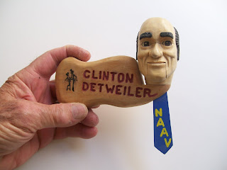
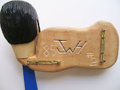

Mini Mr. D.
9/14/2010
{kind=link}

In the spring of 1985 I received a call from a Denver woodcarver, Jim Harris, asking if I would show him how I installed moving eyes in a ventriloquist figure. He explained that he had designed a woodcarved lapel nameplate piece with moving mouth and eyes, but wanted to explore ways the movements might be improved.
We arranged to meet, and when he showed me his first piece of work at that meeting I was blown away with the detail and precision mechanics. Very little of a my ventriloquist figure's mechanical design applied but we enjoyed discussing possibilities.
{kind=link}
Before that meeting ended, however, I commissioned Jim to carve and construct one of his miniature works in my likeness. You see it here. It was #2 of Harris' series of such carvings, and one of the pieces from my collection that will not be sold or given away!
I have to wonder if it was Jim Harris who handcrafted the similar piece that Kevin is offering for sale on eBay, but there are no signature markings on the Elvis piece as there are on mine.
{kind=link}
